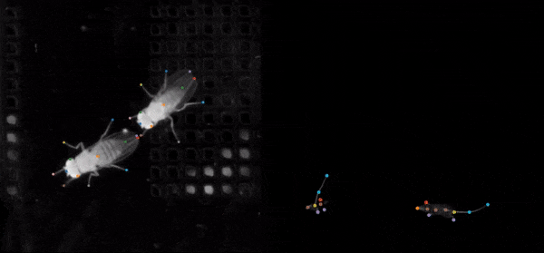
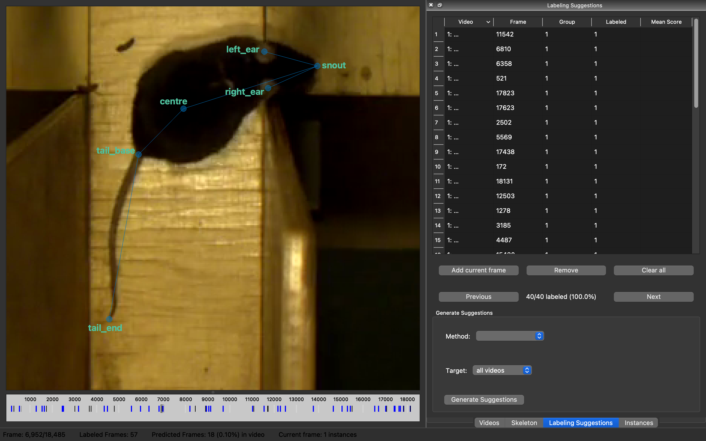
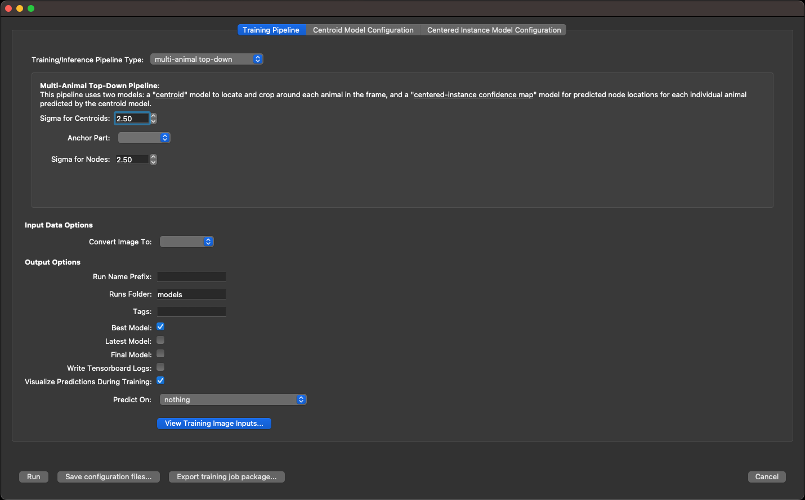
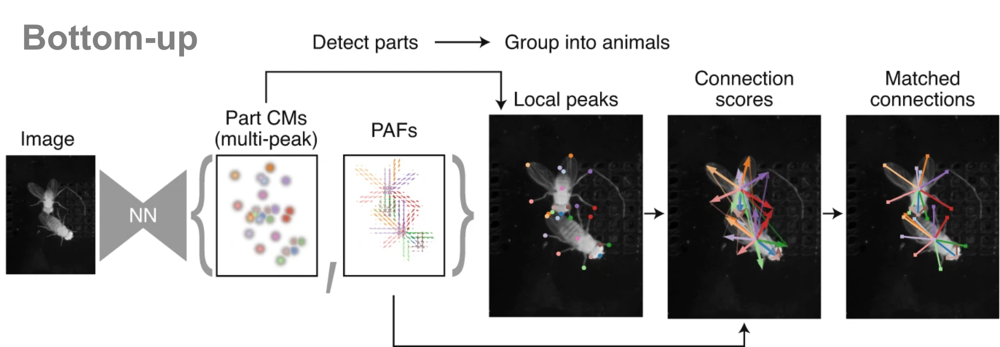

Pose estimation with SLEAP
Applied HPC use example
Course materials
Sample data
/ceph/scratch/neuroinformatics-dropoff/SLEAP_HPC_test_data
- Mouse video (from Loukia Katsouri)
- SLEAP project with labelled data
Github repository
github.com/neuroinformatics-unit/swc-hpc-pose-estimation
- This presentation
- Example scripts
Tracking animals in videos
Pose estimation

Existing tools
- DeepLabCut
- SLEAP
- Many others:
- OpenPose
- DeepPoseKit
- Anipose
- Freipose
- …

SLEAP workflow

- Training and inference are GPU-intensive
- We can delegate to the HPC cluster’s GPU nodes
Label body parts
- Annotate frames using the
sleap-labelGUI on your PC/laptop - Save project (e.g.
labels.v001.slp)

Configure training
- In the
sleap-labelGUI:Predict/Run Training...

- When ready,
Export training job package...
Training job package contents
labels.v001.slp.training_job.zip => unzip
# Copy of labelled frames
labels.v001.pkg.slp
# Model configuration files
centroid.json
centered_instance.json
# Bash scripts for running training and inference
train_script.sh
inference_script.sh
# Summary of all jobs
jobs.yamlTop-down vs bottom-up


Finding our project on the HPC
# Logging into the HPC cluster
ssh <SWC-USERNAME>@ssh.swc.ucl.ac.uk # Provide password
ssh hpc-gw1 # Provide password again
# Navigate to your SLEAP project
cd /ceph/scratch/neuroinformatics-dropoff/SLEAP_HPC_test_data
# Check the contents of your folder
ls -l
# Go inside the exported training package
cd labels.v001.slp.training_job
ls -l
# View the contents of train-script.sh
cat train-script.shtrain-script.sh
#!/bin/bash
sleap-train centroid.json labels.v001.pkg.slp
sleap-train centered_instance.json labels.v001.pkg.slpGet SLURM to run the script
Suitable for debugging (immediate feedback)
Start an interactive job with one GPU
srun -p gpu --gres=gpu:1 --pty bash -iExecute commands one-by-one, e.g.:
module load SLEAP cd <MY-TRAINING-DIRECTORY> bash train-script.sh # Stop the session exit
Main method for submitting jobs
Prepare a batch script, e.g.
run_sleap_training.shSubmit the job:
sbatch run_sleap_training.shMonitor job status:
squeue -u <SWC-USERNAME>
Useful for submitting many similar jobs
- Write a batch script
- Execute the script over an array of inputs in parallel
Batch script
# Clone the GitHub repository
git clone https://github.com/neuroinformatics-unit/swc-hpc-pose-estimation.git
# View the contenrs of the SLURM script
cat swc-hpc-pose-estimation/SLEAP/slurm_batch_script.shslurm_batch_script.sh
#!/bin/bash
#SBATCH -p gpu # partition (queue)
#SBATCH -N 1 # number of nodes
#SBATCH --mem 12G # memory pool for all cores
#SBATCH -n 2 # number of cores
#SBATCH -t 0-06:00 # time (D-HH:MM)
#SBATCH --gres gpu:1 # request 1 GPU (of any kind)
#SBATCH -o slurm.%N.%j.out # STDOUT
#SBATCH -e slurm.%N.%j.err # STDERR
#SBATCH --mail-type=ALL
#SBATCH --mail-user=ucqfnsi@ucl.ac.uk
# Load the SLEAP module
module load SLEAP
# Go to the training job directory
cd /ceph/scratch/neuroinformatics-dropoff/SLEAP_HPC_test_data/labels.v001.slp.training_job
# Run the training script generated by SLEAP
bash train-script.shUseful links
Pose estimation
SWC wiki
Acknowledgements
- Loukia Katsouri (mouse videos)
- Chang Huan Lo (example SLEAP code)
- Alex Martin (setting up HPC modules)
- Sofia Minano and Laura Schwarz (testing)